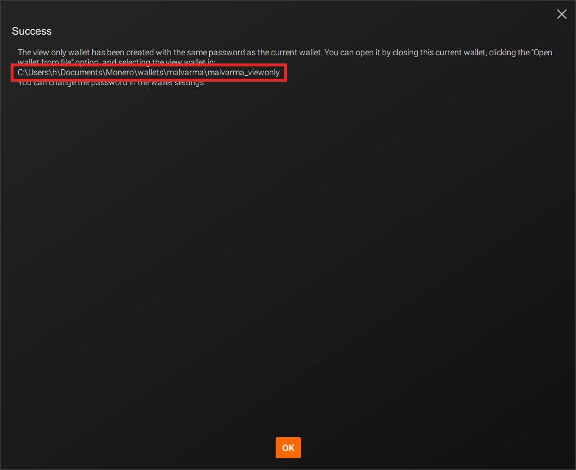
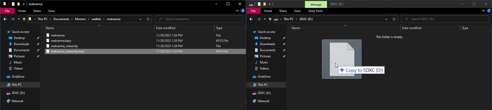
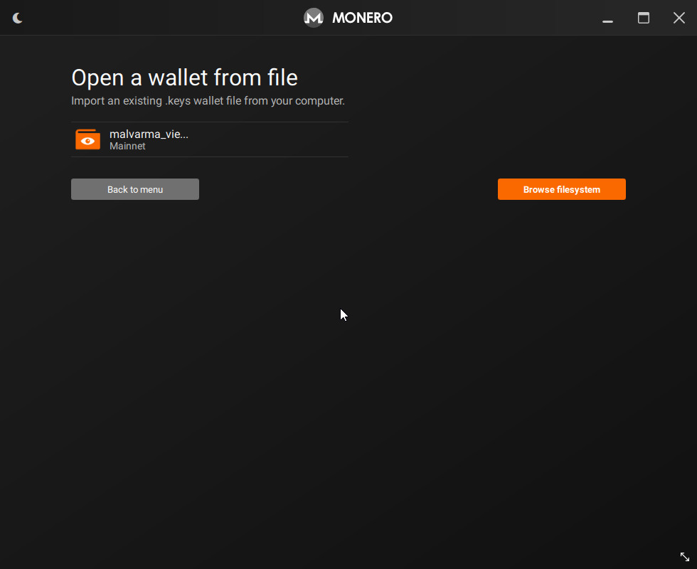
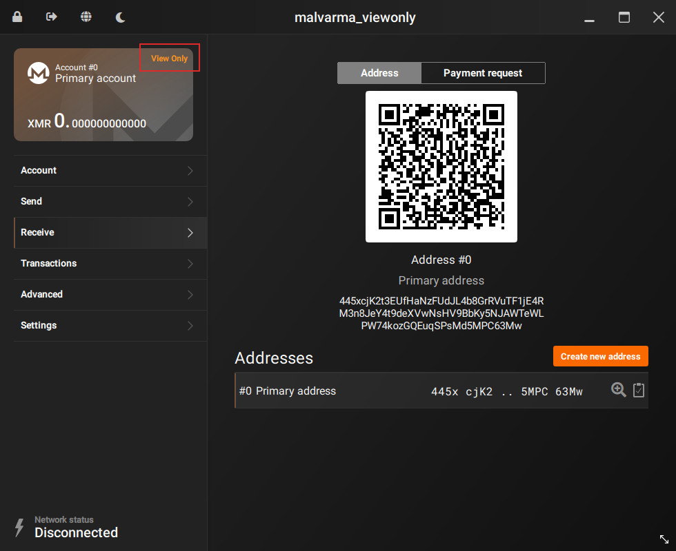

Create the view wallet
Now that you've created your cold wallet, you're now going to create a corresponding view-only wallet. This wallet is linked to your cold wallet (same address), but it has some notable properties.
This view-only wallet can:
- See incoming transactions
- Create transactions
but is not allowed to sign transactions (aka, spend funds).
This view-only wallet can be placed on a "hot" machine, and you can be more relaxed with it, as it cannot spend funds.
üëÅ Creating the view-only wallet
In your cold wallet, goto:
- Settings
- Wallet
and click Create a view-only wallet.

Take note of where the new view-only wallet is saved.

Go to the location of where your view-only wallet is saved.
On Windows, by default it is:
C:\Users\COLD_COMPUTER\Documents\Monero\wallets\YOUR_WALLET\YOUR_WALLET_viewonly
Now, plug in your data transfer medium of choice (USB, SD Card, etc), and copy the view-only wallet over.
Only the view-only wallet.
There will be a normal file (malvarma_viewonly in the picture) and a corresponding .keys version, only the .keys version is required but you can copy both.

üì• Importing the view-only wallet
Stepping away from the cold device - we're now switching over to your view-only device (maybe the computer you're using to read this guide?)
Plug in your data transfer medium of choice, import the view-only wallet files.

The view-only wallet files should be placed where your Monero GUI looks for wallet files, again by default this is in:
C:\Users\HOT_COMPUTER\Documents\Monero\wallets\YOUR_WALLET
If you don't know where Monero GUI looks for wallet files, that's fine, it will allow you to select them in the next step.
Import the view-only wallet by selecting Open a wallet from file.

There's our view-only wallet, select it and open.

You now have a view-only wallet version of your cold wallet!
Make sure the address is the same as your cold wallet.
Note that in the top-left corner, a View Only marker appears.
From now on, if you're ever confused on which wallet we're dealing with in the guide, look for the View Only marker.
⏳ Syncing the view-only wallet
To view funds sent to this wallet, you'll be syncing this view-only wallet just like you would for a regular wallet.

Fast forward some amount of time.
We've received some funds, and we can see it after syncing the view-only wallet.
But, we can't spend it.
To address this, let's continue to the next chapter: Transactions.